<!DOCTYPE html>
<html lang="fr">
<head>
<meta charset="UTF-8">
<meta name="viewport" content="width=device-width, initial-scale=1.0">
<title>Gaz et vapeurs — WIKI SST Mines</title>
<link rel="stylesheet" href="../../../../assets/style.css">
<link rel="icon" href="data:image/svg+xml,<svg xmlns='http://www.w3.org/2000/svg' viewBox='0 0 100 100'><text y='.9em' font-size='90'>⛏️</text></svg>">
<script>window.ROOT='../../../../';</script>
</head>
<body>
<header class="site-header">
  <button class="burger" id="burger" aria-label="Menu">☰</button>
  <a class="brand" href="../../../../index.html"><span class="brand-icon">⛏️</span><span class="brand-text"><strong>WIKI SST</strong><small>Mines · Québec</small></span></a>
  <div class="searchbox">
    <input type="search" id="q" placeholder="Rechercher dans le wiki…" autocomplete="off">
    <div id="suggest" class="suggest" hidden></div>
  </div>
</header>
<div class="layout">
<nav class="sidebar" id="sidebar">
  <div class="nav-group"><div class="nav-title">Navigation</div>
    <ul>
      <li><a href="../../../../index.html">🏠 Portail</a></li>
      <li><a href="#" id="randomLink">🎲 Une page au hasard</a></li>
    </ul>
  </div>
  <div class="nav-group"><div class="nav-title">🌫️ Hygiène industrielle</div>
  <ul>
    <li><a href="../../../../w/hygiene/index.html">Accueil du wiki</a></li>
    <li><a href="../../../../w/hygiene/05-demarrage-rapide/index.html">Démarrage rapide</a></li><li><a href="../../../../w/hygiene/10-themes/index.html">Thèmes</a></li><li><a href="../../../../w/hygiene/20-articles-internes/index.html">Articles internes</a></li><li><a href="../../../../w/hygiene/25-articles-travailleurs/index.html">Articles travailleurs</a></li><li><a href="../../../../w/hygiene/27-articles-gestionnaires/index.html">Articles gestionnaires</a></li><li><a href="../../../../w/hygiene/30-glossaire/index.html">Glossaire</a></li><li><a href="../../../../w/hygiene/40-articles-de-loi/index.html">Articles de loi</a></li>
    <li><a href="../../../../w/hygiene/index-alphabetique.html">Index alphabétique</a></li>
    
  </ul></div>
  <div class="nav-group"><div class="nav-title">Les wikis</div><ul><li><a href="../../../../w/ergonomie/index.html">🦺 Ergonomie</a></li><li class="active"><a href="../../../../w/hygiene/index.html">🌫️ Hygiène industrielle</a></li><li><a href="../../../../w/toxicologie/index.html">☣️ Toxicologie</a></li><li><a href="../../../../w/securite/index.html">⛑️ Sécurité industrielle</a></li><li><a href="../../../../w/droit-travail/index.html">📋 Droit du travail</a></li><li><a href="../../../../w/psychosocial/index.html">🧠 SST psychosociale</a></li><li><a href="../../../../w/legislation/index.html">⚖️ Recueil législatif</a></li></ul></div>
</nav>
<main class="content">

<div class="breadcrumbs"><a href="../../../../index.html">Portail</a> <span class="crumb-sep">›</span> <a href="../../../../w/hygiene/index.html">Hygiène industrielle</a> <span class="crumb-sep">›</span> <a href="../../../../w/hygiene/20-articles-internes/index.html">Articles internes</a> <span class="crumb-sep">›</span> <a href="../../../../w/hygiene/20-articles-internes/substances-dangereuses/index.html">Substances dangereuses</a></div>
<h1 class="page-title">Gaz et vapeurs</h1>
<div class="page-sub">Un article du wiki <a href="../../../../w/hygiene/index.html">🌫️ Hygiène industrielle</a></div>
<aside class="infobox"><div class="infobox-title">🌫️ Gaz et vapeurs</div><table><tr><th>Thème</th><td><a href="../../../../w/hygiene/27-articles-gestionnaires/programmes-de-prevention/hygiene-industrielle.html">Mettre en place un programme d'hygiène industrielle</a></td></tr><tr><th>Statut</th><td>complet</td></tr><tr><th>Qualité</th><td>bonne</td></tr><tr><th>Révision</th><td>2026-05-22</td></tr><tr><th>Public cible</th><td>conseiller</td></tr><tr><th>Sensibilité</th><td>interne</td></tr></table><div class="infobox-tags"><span class="tag">wiki</span><a class="tag tag-lien" href="../../../../categorie/hygiene.html">hygiène</a><span class="tag">gaz</span><span class="tag">vapeurs</span><span class="tag">cov</span></div></aside>

<nav class="toc" aria-label="Sommaire de la page"><div class="toc-title">Sommaire <span class="toc-compte">8 sections</span> <button class="toc-toggle" aria-expanded="true">[masquer]</button></div><ul><li class="toc-l3"><a href="#distinction-gaz-vs-vapeur">Distinction gaz vs vapeur</a></li><li class="toc-l3"><a href="#proprietes-physiques-cles">Propriétés physiques clés</a></li><li class="toc-l3"><a href="#loi-des-gaz-parfaits">Loi des gaz parfaits</a></li><li class="toc-l3"><a href="#unites-et-conversions">Unités et conversions</a></li><li class="toc-l3"><a href="#risques-dincendie-et-dexplosivite">Risques d'incendie et d'explosivité</a></li><li class="toc-l3"><a href="#evaluation-et-controle">Évaluation et contrôle</a></li><li class="toc-l3"><a href="#application-terrain">Application terrain</a></li><li class="toc-l3"><a href="#ressources">Ressources</a></li></ul></nav>
<div class="page-body">
<p>Les gaz et vapeurs sont des contaminants invisibles dont le comportement dépend de la densité, de la tension de vapeur et de la masse moléculaire. Leur évaluation exige des conversions entre ppm et mg/m³ et la connaissance de la loi des gaz parfaits, surtout pour les calculs en conditions non <a href="../../../../w/legislation/40-concepts-juridiques-transverses/tpn.html" title="TPN">TPN</a>. En mine, le CO, le NO2 et le H2S sont les gaz prioritaires à surveiller en continu.</p>
<p><strong>Table des matières</strong></p>
<ol>
<li><a href="#distinction-gaz-vs-vapeur">Distinction gaz vs vapeur</a></li>
<li><a href="#propri%C3%A9t%C3%A9s-physiques-cl%C3%A9s">Propriétés physiques clés</a></li>
<li><a href="#loi-des-gaz-parfaits">Loi des gaz parfaits</a></li>
<li><a href="#unit%C3%A9s-et-conversions">Unités et conversions</a></li>
<li><a href="#risques-dincendie-et-dexplosivit%C3%A9">Risques d&#39;incendie et d&#39;explosivité</a></li>
<li><a href="#%C3%A9valuation-et-contr%C3%B4le">Évaluation et contrôle</a></li>
<li><a href="#application-terrain">Application terrain</a></li>
</ol>
<h3 id="distinction-gaz-vs-vapeur">Distinction gaz vs vapeur</h3>
<p>Le schéma suivant rappelle les trois états de la matière.</p>
<span class="page-img"><a href="../../../../files/sst-images/pasted-image-20241009041521.png" target="_blank" rel="noopener">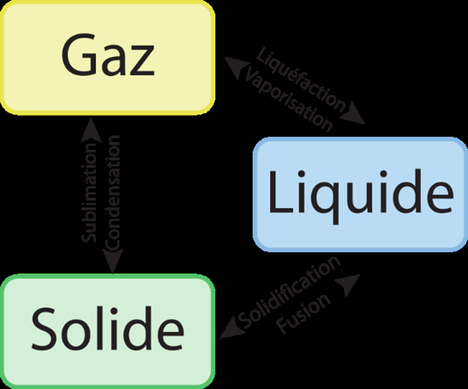</a><span class="img-zoom">Toucher l'image pour l'agrandir</span></span>
<table>
<thead>
<tr>
<th>Phase</th>
<th>Définition</th>
</tr>
</thead>
<tbody><tr>
<td>Gaz</td>
<td>Substance gazeuse aux conditions TPN (25 °C, 101,3 kPa). Pas de forme propre. Ex. O2, N2, CO, H2S</td>
</tr>
<tr>
<td>Vapeur</td>
<td>Phase gazeuse d&#39;une substance normalement liquide à TPN. Ex. vapeurs de toluène, mercure, eau</td>
</tr>
</tbody></table>
<p>Les transitions liquide vers vapeur sont fréquentes en milieu industriel.</p>
<span class="page-img"><a href="../../../../files/sst-images/pasted-image-20241009041611.png" target="_blank" rel="noopener">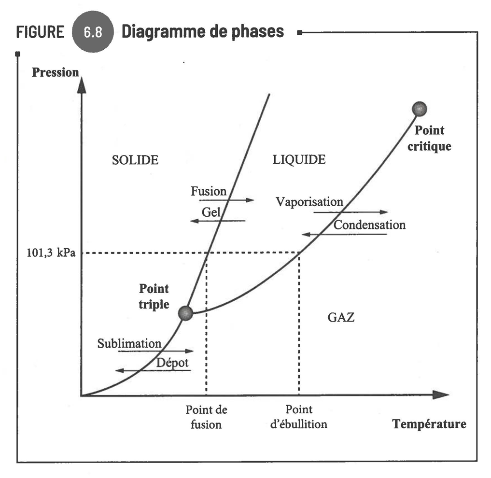</a><span class="img-zoom">Toucher l'image pour l'agrandir</span></span>
<h3 id="proprietes-physiques-cles">Propriétés physiques clés</h3>
<table>
<thead>
<tr>
<th>Propriété</th>
<th>Définition</th>
<th>Importance</th>
</tr>
</thead>
<tbody><tr>
<td>Densité de vapeur</td>
<td>Ratio par rapport à l&#39;air</td>
<td>&gt; 1 : descend au sol ; &lt; 1 : monte. Critique en <a href="../../../../w/hygiene/25-articles-travailleurs/espaces-clos.html" title="Entrer dans un espace clos en sécurité">Entrer dans un espace clos en sécurité</a></td>
</tr>
<tr>
<td>Tension de vapeur</td>
<td>Pression exercée par la phase vapeur à l&#39;équilibre (mmHg, kPa)</td>
<td>Élevée = substance volatile</td>
</tr>
<tr>
<td><a href="../../../../w/legislation/40-concepts-juridiques-transverses/cov.html" title="COV">COV</a></td>
<td>Composés organiques volatils</td>
<td><a href="../../../../w/hygiene/20-articles-internes/substances-dangereuses/solvants.html" title="Solvants organiques">Solvants organiques</a>, BTEX, formaldéhyde, HAP</td>
</tr>
<tr>
<td>Point d&#39;éclair</td>
<td>T° min pour former un mélange inflammable avec une source d&#39;ignition</td>
<td>Bas = risque incendie élevé</td>
</tr>
<tr>
<td>T° d&#39;auto-ignition</td>
<td>T° d&#39;inflammation sans source d&#39;ignition</td>
<td>Proche T° ambiante = risque élevé</td>
</tr>
</tbody></table>
<p>Comportement selon la densité de vapeur (plus lourd ou plus léger que l&#39;air).</p>
<span class="page-img"><a href="../../../../files/sst-images/pasted-image-20241009041650.png" target="_blank" rel="noopener">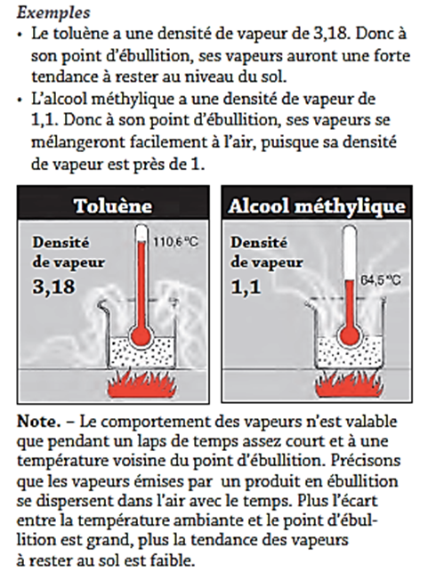</a><span class="img-zoom">Toucher l'image pour l'agrandir</span></span>
<p>La tension de vapeur est un indicateur direct de volatilité.</p>
<span class="page-img"><a href="../../../../files/sst-images/pasted-image-20241009041706.png" target="_blank" rel="noopener">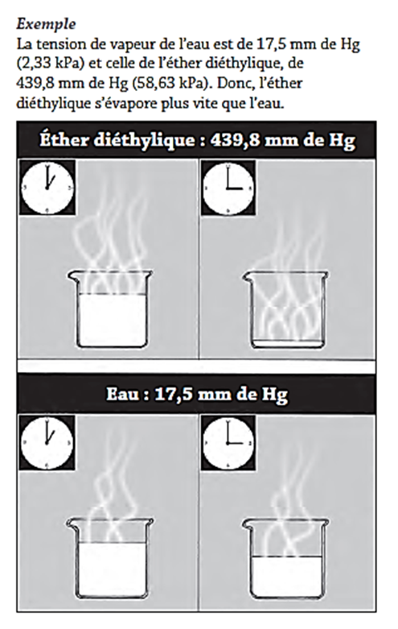</a><span class="img-zoom">Toucher l'image pour l'agrandir</span></span>
<h3 id="loi-des-gaz-parfaits">Loi des gaz parfaits</h3>
<p>$$PV = nRT$$</p>
<ul>
<li>Le volume d&#39;un gaz augmente avec la température (P constant).</li>
<li>Diminue si la pression augmente (T constant).</li>
<li>En hygiène : pour ajuster les concentrations mesurées aux conditions TPN, surtout en mine ou en hiver.</li>
</ul>
<p>Ajustement TPN<br>$$\text{ppm}<em>{TPN} = \text{ppm}</em>{ech} \times \frac{P_{ech}}{760} \times \frac{298}{T_{ech}(K)}$$</p>
<p>Détails et exemples : <a href="../../../../w/hygiene/20-articles-internes/evaluation-et-mesure/calculs-dexposition.html" title="Calculs d'exposition et ajustements TPN">Calculs d&#39;exposition et ajustements TPN</a>.</p>
<h3 id="unites-et-conversions">Unités et conversions</h3>
<table>
<thead>
<tr>
<th>Unité</th>
<th>Usage</th>
</tr>
</thead>
<tbody><tr>
<td>ppm</td>
<td>Parties par million en volume (gaz et vapeurs)</td>
</tr>
<tr>
<td>mg/m³</td>
<td>Masse par volume d&#39;air (<a href="../../../../w/hygiene/20-articles-internes/environnement-de-travail/aerosols.html" title="Aérosols">Aérosols</a>, parfois gaz)</td>
</tr>
<tr>
<td>%</td>
<td>Plus rare (1 % = 10 000 ppm)</td>
</tr>
</tbody></table>
<p>Conversions à TPN (25 °C, 101,3 kPa) avec MM = masse moléculaire en g/mol<br>$$\text{ppm} = \frac{\text{mg/m}^3 \times 24{,}45}{MM} \qquad \text{mg/m}^3 = \frac{\text{ppm} \times MM}{24{,}45}$$</p>
<span class="page-img"><a href="../../../../files/sst-images/pasted-image-20241009050112.png" target="_blank" rel="noopener">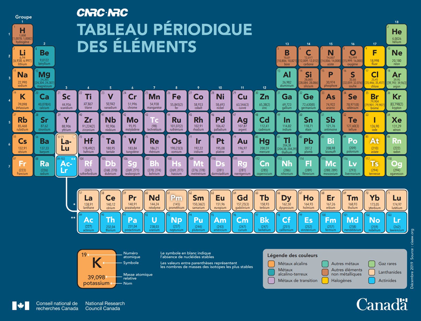</a><span class="img-zoom">Toucher l'image pour l'agrandir</span></span>
<h3 id="risques-dincendie-et-dexplosivite">Risques d&#39;incendie et d&#39;explosivité</h3>
<ul>
<li>Concentration à saturation : concentration max dans l&#39;air à l&#39;équilibre, TPN.</li>
<li><a href="../../../../w/legislation/40-concepts-juridiques-transverses/lie.html" title="LIE">LIE</a> (Limite Inférieure d&#39;Explosivité) : sous cette concentration, mélange trop pauvre.</li>
<li>LSE (Limite Supérieure d&#39;Explosivité) : au-dessus, mélange trop riche.</li>
</ul>
<span class="page-img"><a href="../../../../files/sst-images/pasted-image-20241009045807.png" target="_blank" rel="noopener">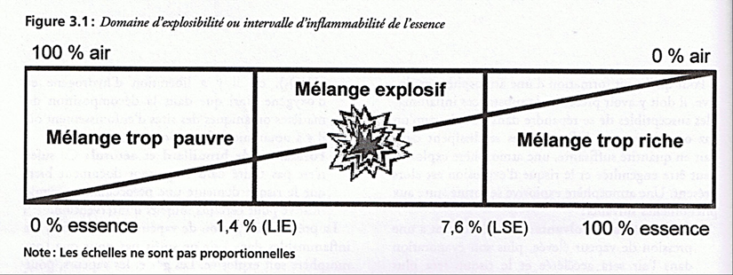</a><span class="img-zoom">Toucher l'image pour l'agrandir</span></span>
<p>Exemples</p>
<table>
<thead>
<tr>
<th>Produit</th>
<th>LIE</th>
<th>LSE</th>
</tr>
</thead>
<tbody><tr>
<td>Acétylène</td>
<td>2,5 %</td>
<td>100 %</td>
</tr>
<tr>
<td>Formaldéhyde</td>
<td>7,0 %</td>
<td>73 %</td>
</tr>
<tr>
<td>Toluène</td>
<td>1,1 %</td>
<td>7,1 %</td>
</tr>
</tbody></table>
<p>En espace clos : maintenir les concentrations sous 5 % de la LIE (art. 302 RSST).</p>
<h3 id="evaluation-et-controle">Évaluation et contrôle</h3>
<h4 id="methodes-dechantillonnage">Méthodes d&#39;échantillonnage</h4>
<ul>
<li>Tube adsorbant + pompe à bas débit (charbon actif, silica gel).</li>
<li>Badge passif (diffusion).</li>
<li>Lecture directe (LID) : détecteurs multigaz (CO, H2S, LIE, O2), photo-ionisation (PID).</li>
</ul>
<p>Le tube absorbant typique combine charbon actif et gel de silice.</p>
<span class="page-img"><a href="../../../../files/sst-images/pasted-image-20241017024634.png" target="_blank" rel="noopener">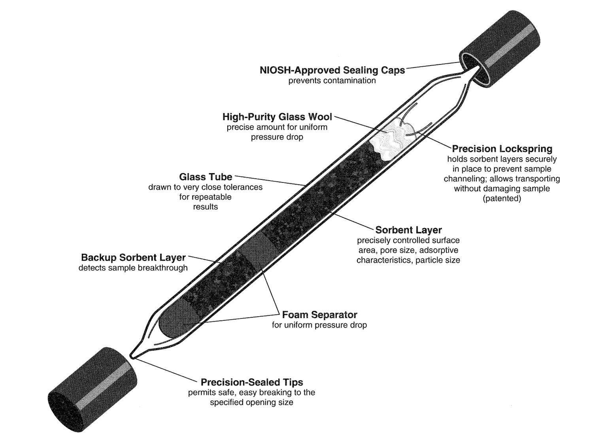</a><span class="img-zoom">Toucher l'image pour l'agrandir</span></span>
<p>Les tubes colorimétriques à pompe manuelle restent utiles pour des évaluations ponctuelles.</p>
<span class="page-img"><a href="../../../../files/sst-images/pasted-image-20241017025114.png" target="_blank" rel="noopener">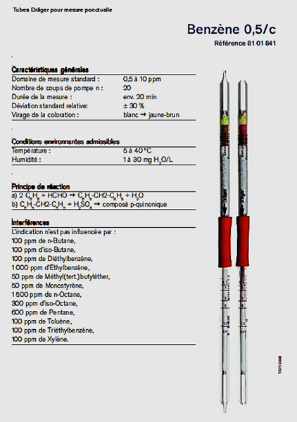</a><span class="img-zoom">Toucher l'image pour l'agrandir</span></span>
<p>Détecteurs multigaz portables, équipement de base d&#39;un hygiéniste de terrain en mine.</p>
<span class="page-img"><a href="../../../../files/sst-images/pasted-image-20241017032446.png" target="_blank" rel="noopener">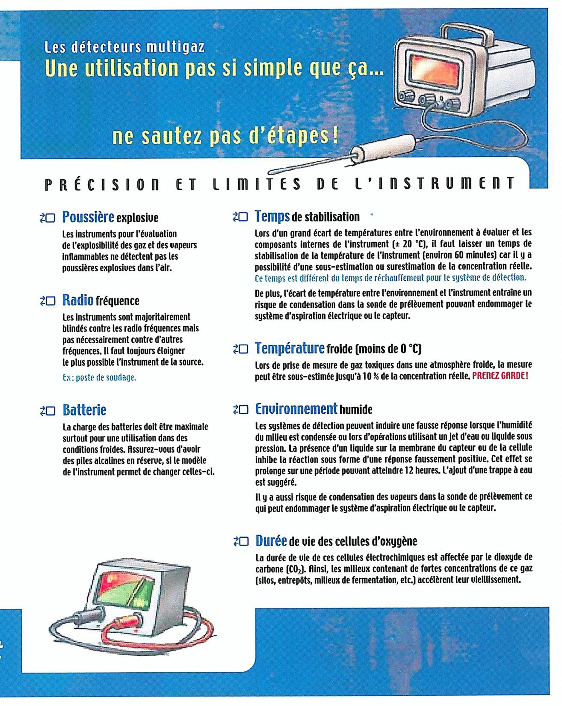</a><span class="img-zoom">Toucher l'image pour l'agrandir</span></span>
<h4 id="methodes-danalyse">Méthodes d&#39;analyse</h4>
<ul>
<li>Chromatographie gazeuse (GC-MS, GC-FID).</li>
<li>Spectrophotométrie.</li>
<li>Méthodes <a href="../../../../w/legislation/30-organismes-et-tribunaux/irsst.html" title="IRSST">IRSST</a> et <a href="../../../../w/legislation/30-organismes-et-tribunaux/niosh.html" title="NIOSH">NIOSH</a>.</li>
</ul>
<span class="page-img"><a href="../../../../files/sst-images/pasted-image-20241017032156.png" target="_blank" rel="noopener">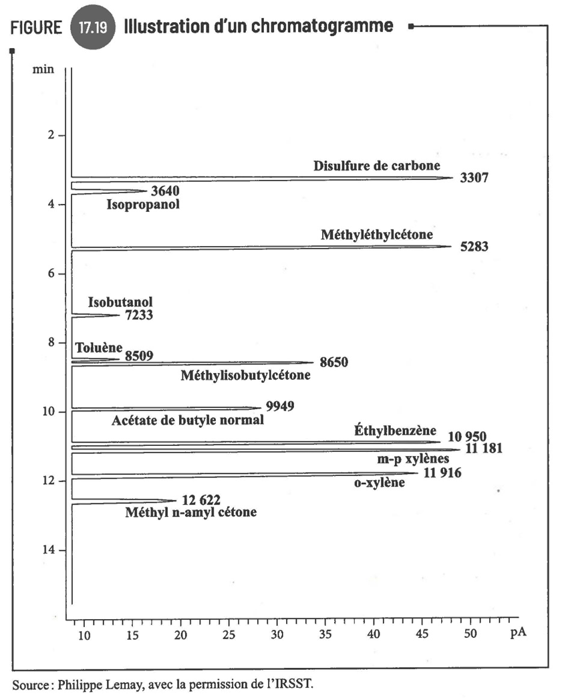</a><span class="img-zoom">Toucher l'image pour l'agrandir</span></span>
<h4 id="relation-4-pour-gaz-toxique">Relation 4 pour gaz toxique</h4>
<p>Exemple : la relation dose-réponse pour le monoxyde de carbone.</p>
<span class="page-img"><a href="../../../../files/sst-images/pasted-image-20241017011014.png" target="_blank" rel="noopener">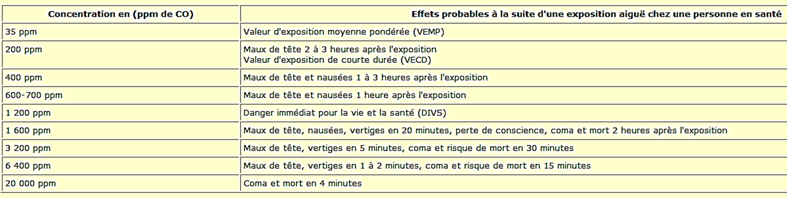</a><span class="img-zoom">Toucher l'image pour l'agrandir</span></span>
<h4 id="moyens-de-controle">Moyens de contrôle</h4>
<p>Suivre la <a href="../../../../w/hygiene/20-articles-internes/prevention-et-programmes/hierarchie-des-moyens-de-prevention.html" title="Hiérarchie des moyens de prévention">Hiérarchie des moyens de prévention</a></p>
<ul>
<li>Substitution (<a href="../../../../w/hygiene/20-articles-internes/substances-dangereuses/solvants.html" title="Solvants organiques">Solvants organiques</a> moins volatils, à base d&#39;eau).</li>
<li>Ventilation locale (captation à la source).</li>
</ul>
<span class="page-img"><a href="../../../../files/sst-images/pasted-image-20241017032936.png" target="_blank" rel="noopener">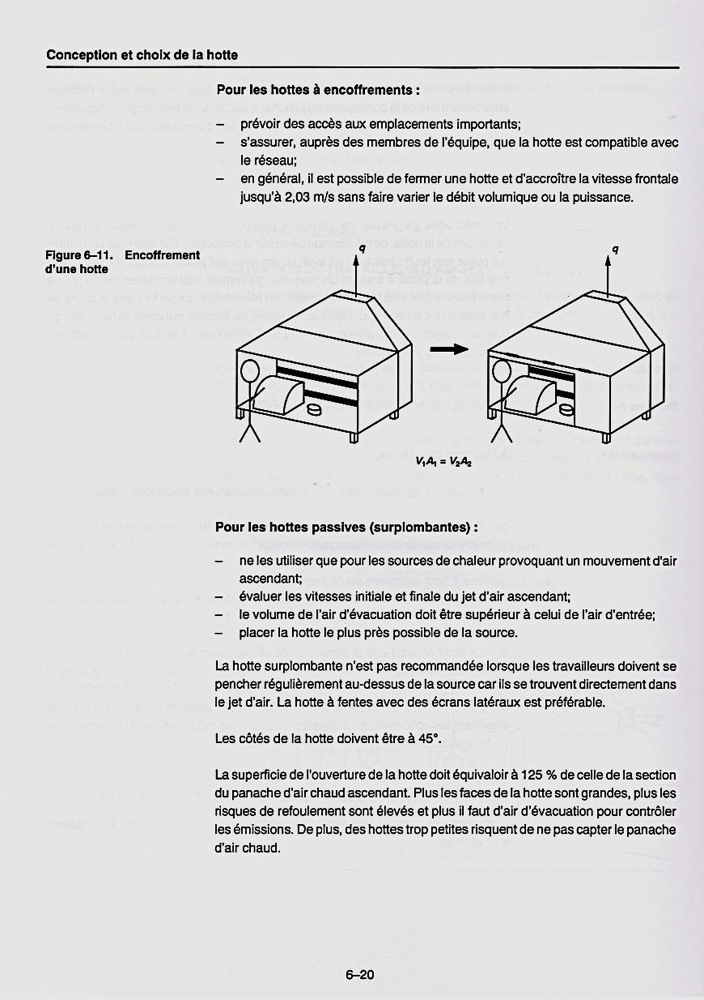</a><span class="img-zoom">Toucher l'image pour l'agrandir</span></span>
<ul>
<li>Ventilation générale par dilution.</li>
<li><a href="../../../../w/hygiene/20-articles-internes/prevention-et-programmes/apr.html" title="Protection respiratoire (APR)">APR</a> à cartouche chimique (code couleur selon le contaminant).</li>
</ul>
<h3 id="application-terrain">Application terrain</h3>
<p><strong>Gaz prioritaires en mine</strong></p>
<table>
<thead>
<tr>
<th>Gaz</th>
<th>Source</th>
<th><a href="../../../../w/legislation/40-concepts-juridiques-transverses/vemp.html" title="VEMP">VEMP</a></th>
<th>Surveillance</th>
</tr>
</thead>
<tbody><tr>
<td>CO (monoxyde de carbone)</td>
<td>Diesel, sautage, incendies</td>
<td>35 ppm</td>
<td>Continue, détecteurs fixes et personnels</td>
</tr>
<tr>
<td>NO2 (dioxyde d&#39;azote)</td>
<td>Diesel, sautage</td>
<td>3 ppm</td>
<td>Post-sautage, surveillance continue</td>
</tr>
<tr>
<td>H2S (sulfure d&#39;hydrogène)</td>
<td>Eaux usées, sulfures de minerai</td>
<td>10 ppm</td>
<td>Détecteurs personnels</td>
</tr>
<tr>
<td>O2</td>
<td>Atmosphères confinées</td>
<td>20,5-23 %</td>
<td>Mesure préalable obligatoire</td>
</tr>
<tr>
<td>Méthane (CH4)</td>
<td>Certains gisements (charbon)</td>
<td>1 % (LIE = 5 %)</td>
<td>Continue dans certaines mines</td>
</tr>
<tr>
<td>Vapeurs de cyanure (HCN)</td>
<td>Usine de lyxiviation (Au)</td>
<td>4,7 ppm</td>
<td>Selon procédé</td>
</tr>
<tr>
<td>Ammoniac</td>
<td>Réfrigération, lixiviation</td>
<td>25 ppm</td>
<td>Selon installation</td>
</tr>
</tbody></table>
<p><strong>Particularités minières</strong></p>
<ul>
<li>Délai de réentrée post-sautage codifié par le RSSM et la procédure du site.</li>
<li>Ventilation principale + auxiliaire pour diluer CO et NO2 produits par le diesel.</li>
<li>Détecteurs multigaz personnels obligatoires en espaces à risque.</li>
<li>Densité de vapeur : critère central pour la conception de la ventilation auxiliaire en cul-de-sac.</li>
</ul>
<h3 id="ressources">Ressources</h3>
<table>
<thead>
<tr>
<th>Document</th>
<th>Type</th>
<th>Source</th>
</tr>
</thead>
<tbody><tr>
<td>NIOSH Pocket Guide</td>
<td>Référence</td>
<td>NIOSH</td>
</tr>
<tr>
<td>Reptox</td>
<td>Base de données</td>
<td><a href="../../../../w/psychosocial/20-articles/legislation-et-normes/cnesst-roles-et-pouvoirs.html" title="CNESST, rôles et pouvoirs">CNESST, rôles et pouvoirs</a></td>
</tr>
<tr>
<td>Fiches gaz et vapeurs</td>
<td>Fiches</td>
<td>IRSST</td>
</tr>
<tr>
<td>RSSM ventilation</td>
<td>Règlement</td>
<td>LégisQuébec</td>
</tr>
</tbody></table>
<p><strong>Articles wiki connexes</strong></p>
<ul>
<li><a href="../../../../w/hygiene/20-articles-internes/evaluation-et-mesure/calculs-dexposition.html" title="Calculs d'exposition et ajustements TPN">Calculs d&#39;exposition et ajustements TPN</a></li>
<li><a href="../../../../w/hygiene/20-articles-internes/environnement-de-travail/aerosols.html" title="Aérosols">Aérosols</a></li>
<li>[[SST 1000 Éléments d</li>
</ul>

</div>
<details class="backlinks"><summary>Pages qui pointent ici (17)</summary><ul><li><a href="../../../../w/hygiene/05-demarrage-rapide/demarrage-rapide-conseiller-sst.html">🎯 Démarrage rapide, conseiller SST</a> <small class="bl-wiki">Hygiène industrielle</small></li><li><a href="../../../../w/hygiene/00-accueil/00-accueil.html">🏠 Wiki Hygiène industrielle, mines</a> <small class="bl-wiki">Hygiène industrielle</small></li><li><a href="../../../../w/toxicologie/20-articles-internes/toxicologie-clinique/adme.html">ADME, cheminement des contaminants dans l'organisme</a> <small class="bl-wiki">Toxicologie</small></li><li><a href="../../../../w/hygiene/10-themes/agresseurs-chimiques.html">Agresseurs chimiques</a> <small class="bl-wiki">Hygiène industrielle</small></li><li><a href="../../../../w/hygiene/20-articles-internes/substances-dangereuses/asphyxiants.html">Asphyxiants simples et chimiques</a> <small class="bl-wiki">Hygiène industrielle</small></li><li><a href="../../../../w/toxicologie/20-articles-internes/substances-dangereuses/asphyxiants.html">Asphyxiants simples et chimiques</a> <small class="bl-wiki">Toxicologie</small></li><li><a href="../../../../w/hygiene/20-articles-internes/evaluation-et-mesure/calculs-dexposition.html">Calculs d'exposition et ajustements TPN</a> <small class="bl-wiki">Hygiène industrielle</small></li><li><a href="../../../../w/securite/20-articles-internes/risques-mecaniques-et-operations/espaces-clos.html">Espaces clos</a> <small class="bl-wiki">Sécurité industrielle</small></li><li><a href="../../../../w/toxicologie/20-articles-internes/toxicologie-clinique/maladies-professionnelles.html">Maladies professionnelles en mine</a> <small class="bl-wiki">Toxicologie</small></li><li><a href="../../../../w/hygiene/20-articles-internes/prevention-et-programmes/apr.html">Protection respiratoire (APR)</a> <small class="bl-wiki">Hygiène industrielle</small></li><li><a href="../../../../w/hygiene/20-articles-internes/substances-dangereuses/simdut-et-classes-de-danger.html">SIMDUT et classes de danger</a> <small class="bl-wiki">Hygiène industrielle</small></li><li><a href="../../../../w/toxicologie/20-articles-internes/substances-dangereuses/simdut-et-classes-de-danger.html">SIMDUT et classes de danger</a> <small class="bl-wiki">Toxicologie</small></li><li><a href="../../../../w/hygiene/20-articles-internes/substances-dangereuses/solvants.html">Solvants organiques</a> <small class="bl-wiki">Hygiène industrielle</small></li><li><a href="../../../../w/toxicologie/20-articles-internes/substances-dangereuses/solvants.html">Solvants organiques</a> <small class="bl-wiki">Toxicologie</small></li><li><a href="../../../../w/hygiene/20-articles-internes/substances-dangereuses/substances-dangereuses.html">Substances dangereuses</a> <small class="bl-wiki">Hygiène industrielle</small></li><li><a href="../../../../w/toxicologie/20-articles-internes/toxicologie-clinique/toxicite-respiratoire.html">Toxicité du système respiratoire</a> <small class="bl-wiki">Toxicologie</small></li><li><a href="../../../../w/hygiene/20-articles-internes/evaluation-et-mesure/vea-et-normes.html">VEA et normes RSST</a> <small class="bl-wiki">Hygiène industrielle</small></li></ul></details>
<div class="page-meta">Dernière révision : 2026-05-22</div>
</main>
</div>
<footer class="site-footer">WIKI SST — Mines · encyclopédie interne construite à partir des notes de cours · 2026-08-28</footer>
<script src="../../../../assets/app.js"></script>
</body>
</html>